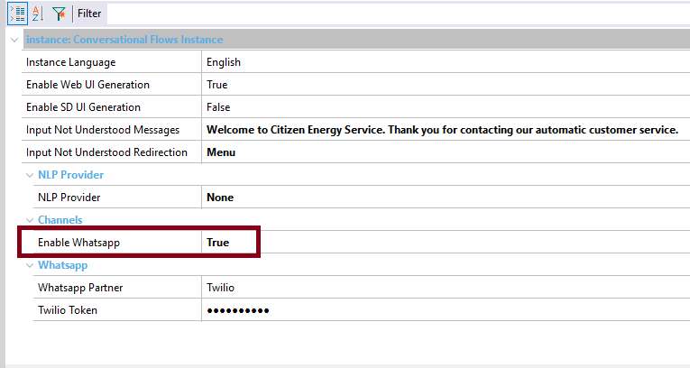

Enables WhatsApp Integration. Scope Objects: Conversational Flows Instance Description
If this property is set to TRUE, the Chatbot will be integrated into WhatsApp, which means that the necessary objects (Chatbot resources) to implement the integration will be imported to the knowledge base.  You have to configure the WhatsApp Partner property to give more information to GeneXus to generate the objects for the integration. If WhatsApp Partner property, and the Token is configured (i.e: Twilio Token property, or Botmaker Token property) are configured, the webhook to Twilio is automatically created. It's generated under the instance's module, and its name is WhatsappWebhook. AvailabilityThis property is available since GeneXus 16 upgrade 10. See Also
|